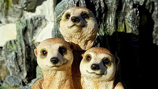
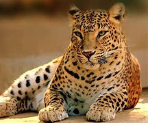
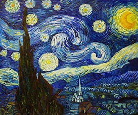
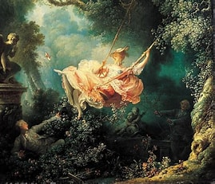
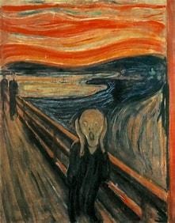
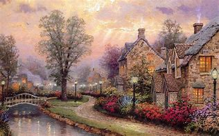
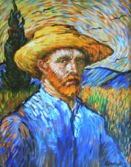
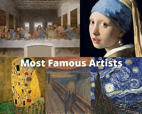
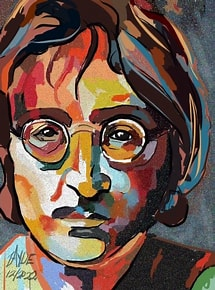

Nature Arts is a vibrant expression of the breathtaking landscapes, flora, and fauna that surround us. It captures the essence of the natural world through various artistic mediums, inviting viewers to explore the intricate details and harmonious beauty of nature. From stunning landscapes to delicate floral compositions, Nature Arts showcases the artistry inherent in the environment.
Animal Pics


The king of the jungle, the lion embodies strength and courage with its powerful presence. Its majestic mane and commanding roar symbolize the untamed beauty of the wild. A true representation of nature's grandeur, the lion reigns supreme in its habitat. Playful Dolphin: Graceful and intelligent, dolphins are known for their playful behavior and social nature.
Famous Arts




Nature Arts is a vibrant expression of the breathtaking landscapes, flora, and fauna that surround us. It captures the essence of the natural world through various artistic mediums, inviting viewers to explore the intricate details and harmonious beauty of nature. From stunning landscapes to delicate floral compositions, Nature Arts showcases the artistry inherent in the environment.
Famous Artists



Vincent van Gogh, a post-impressionist painter, is celebrated for his vivid colors and emotional depth. His masterpieces, such as Starry Night, capture the beauty and turmoil of the human experience. Pablo Picasso, a pioneer of modern art, co-founded the Cubist movement and revolutionized visual expression. His unique style, infused with vibrant colors and Mexican folklore, continues to inspire and resonate today.